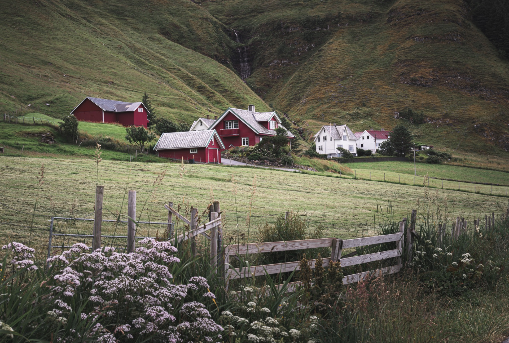

Erfaring, presisjon og ekte engasjement for grunnarbeid. Bli kjent med folka bak Absolutt Maskin.
Eddy Skotte (f. 1973) startet Absolutt Maskin AS i desember 2025 med en klar visjon: å levere grunnarbeid av kompromissløs kvalitet på Romerike. Med årtiers erfaring fra bransjen kjenner han hvert aspekt av faget – fra den minste dreneringsgrøften til de største tomteprosjektene.
Navnet «Absolutt Maskin» er ikke tilfeldig. Det er et løfte. Absolutt kvalitet, absolutt pålitelighet, absolutt profesjonalitet. Når Eddy setter maskinen i jorda, vet du at jobben blir gjort skikkelig – første gang.
Basert i Frogner, midt i Romerikes vekstbelte, er Absolutt Maskin strategisk plassert for å betjene hele regionen. Med kort avstand til E6 og jernbane er responstiden rask, uansett hvor på Romerike prosjektet befinner seg.
Absolutt Maskin er bygget på prinsipper som gjenspeiles i alt vi gjør – fra første befaring til siste komprimering.
Vi tar ingen snarveier. Hvert prosjekt utføres med samme dedikasjon og nøyaktighet, uansett størrelse. «Absolutt» er ikke bare et navn – det er standarden vår.
Hos oss snakker du direkte med den som utfører jobben. Én kontaktperson fra start til slutt gir trygghet og forutsigbarhet i hele prosessen.
Du får et ærlig tilbud basert på reelle vurderinger. Ingen skjulte kostnader, ingen overraskelser. Vi forteller det som det er.
Vi vet at tid er penger. Derfor svarer vi raskt på henvendelser og stiller opp til befaring når det passer deg.
Vi bor og jobber på Romerike. Vi kjenner grunnforholdene, vi kjenner kommunene, og vi kjenner utfordringene i den lokale leirjorda.
Vi sorterer avfall, disponerer masser forsvarlig og jobber for å minimere miljøavtrykket fra våre operasjoner.
Vi investerer i moderne, vedlikeholdte maskiner som gjør jobben effektivt og presist. Riktig maskin til riktig jobb.
Maskinparken utvides etter behov og prosjektstørrelse. For spesialutstyr som bergsprenger, har vi gode samarbeidspartnere som vi benytter ved behov.
Frogner er et voksende tettsted i Lillestrøm kommune med rundt 2 000 innbyggere. Strategisk plassert vest i kommunen, rett ved avkjøring fra E6, gir Frogner oss rask tilgang til hele Romerike.
Lillestrøm kommune er Norges 9. største med over 96 800 innbyggere, og Romerike har hatt landets nest høyeste regionale befolkningsvekst de siste ti årene. Med megaprosjekter som Kjeller ny bydel (1 100 dekar), Sørumsand sentrum (400–500 nye boliger) og kontinuerlig boligutvikling i Frogner, Hekseberg og Vardefjellet, er behovet for kvalifisert grunnarbeid større enn noensinne.
Vi er her vi skal være – midt i veksten, klare til å ta fatt på de prosjektene som bygger fremtidens Romerike.

Ta kontakt for en uforpliktende prat om ditt prosjekt.